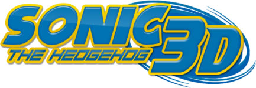
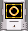
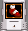
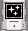
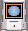
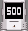
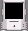
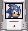
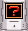
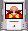

Sonic the Hedgehog 3D — фанатская игра про известного персонажа Соника, созданная разработчиком Zykov Eddy и базирующаяся на движке Eduke32 (современная версия движка Build). Разработка игры чередовалась большими перерывами. Целью создания игры являлось сделать некий гибрид двух игровых серий: серии Sonic Adventure и серии игр про Соника с приставки Sega Mega Drive. Игра придётся по вкусу как фанатам игровой вселенной Соника, так и фанатам трёхмерных инди платформеров.
Важно: для того, чтобы играть в эту игру, необходимо, чтобы ваш компьютер поддерживал OpenGL.
* Минимальные системные требования:
Windows XP/7Процессор 2.0GHz Intel Pentium III или AMD Athlon
256 MB of RAM
64 MB видео карта с драйверами, поддерживающими OpenGL
("GeForce4 MX" или выше)
Звуковая карта, работающая с OpenAL
Клавиатура
Мышь
* Рекомендованные системные требования:
Windows XP/7
Процессор Intel Pentium 4 или AMD Athlon XP (или выше)
1GB(+) RAM
256(+) MB видео карта с драйверами, поддерживающими OpenGL
("Radeon 9600 Pro" или выше)
Звуковая карта, работающая с OpenAL
Клавиатура
Мышь
Рекомендуется использовать последние версии драйверов.
* Сайты с софтом:
ATI: Ati.com
Creative Labs: Creative.com
Hercules: Hercules.com
Intel: Intel.com
Matrox: Matrox.com
Nvidia: Nvidia.com
S3: S3graphics.com
SIS: Sis.com
Trident: Tridentmicro.com
* Управление по умолчанию
W – движение вперёд
S – движение назад
A – шаг влево
D – шаг вправо
Мышка - обзор
Space - прыжок
Правая кнопка мыши или левый ctrl – активация спин атаки
E или левая кнопка мыши - использовать. Необходимо для активации специальных атак и использования кнопок/предметов.
Esc – выход в меню/пауза
F – активировать супер режим (вам нужны все изумруды и 50 колец для этого)
H – изменить интерфейс (имеются два)
F12 – снять скриншот (появляется в папке игры в формате PNG)
Вы можете изменить управление по своему желанию в Keyboard и Mouse options
Чтобы играть с джойстиком, в начальном окне в графе "Input Devices" выберите "All supported devices".
* Сюжет
Сюжет начинается с того, что злой доктор Роботник и его приспешник Метал Соник крадут Главный изумруд с острова Ангелов. Наклз, охранник изумруда, получает повреждения от неожиданного взрыва световой бомбы, при этом путая очертания Метал Соника за силуэт обыкновенного Соника из-за ослепляющего света. "Что!? ... С-Соник?" - крикнула от удивление ехидна, перед тем как отлететь в сторону. Роботник и Метал успевают сбежать, и затем Остров Ангелов, оставшийся без энергии Главного изумруда, падает в океан.
На некотором расстоянии от острова, в мастерской Тейлза, он и Соник замечают падение острова. "Что-то случилось с Главным изумрудом!" - воскликнул Соник. Воспользовавшись радаром, механик Тейлз узнаёт горькую правду - Главный изумруд был украден доктором Роботником для его очередного тёмного плана.
"Ну что же, так я и думал" - сказал соник - "Быстрее, за ним!".
Быстро забравшись в Торнадо, самолёт, принадлежащий Тейлзу, друзья вскоре улетают, взяв курс на базу Роботника. Тем временем, Наклз и его напарник Майти преследуют Соника и Тейлза по суше. "Не могу поверить, Соник должно быть работает теперь на Роботника! Этот чертов ёж не уйдёт от меня!" - выкрикнул со злостью Наклз, замечая самолёт в небе. "когда они приземлятся, мы найдём их и быстро разберёмся, что к чему" - добавляет Майти.
Несколько часов спустя, на полпути к базе, Тейлз неожиданно замечает что у самолёта почти не осталось топлива и он совершает вынужденную посадку на Зелёных островах. "Что же теперь делать?" - с досадой сказал Тейлз, осматривая большой остров. "Как что? Найдём базу Роботника своими силами и разрушим его планы, как и всегда!" - с уверенностью заявляет Соник. Выбравшись из кабины, друзья отправились обследовать местность.
Если бы они только знали, что злой доктор приготовил для них большую ловушку на своей базе. "Это будет конец для Соника и его друзей!" - сказал Роботник, следя за мониторами на своей базе - "Я воспользуюсь силой Главного изумруда так, как они даже еще и представить себе не могли. Мир будет моим!"
* Игровой процесс
Игра начинается с главного меню. Для того, чтобы перейти далее, нажмите на пункт Play. В следующем меню выбирайте start game для начала игры. Также в этом меню можно выбрать открываемые бонусы и загрузить последнюю сохранённую игру.
Далее Вам необходимо выбрать персонажа (Соник, Теилз, Наклз или Майти).
Ваши враги – роботы доктора Роботника. Для того, чтобы уничтожить их, прыгните на них, или используйте спин атаку. Соник, Наклз и Майти могут уничтожать врагов с помощью своих способностей.
Всего в данной версии доступны три уровня, по три акта в первых двух и один в третьем. В каждом третьем акте вас ждет борьба с боссом уровня. На уровнях есть множество объектов, включая пружины для высоких прыжков, ускорители, бонусы и также точки сохранения. На этих точках вы можете сохранить игру, чтобы потом вернуться к ней если вас ранят или когда вы выключите игру и зайдёте снова.
С каждым уровнем вы встретите все больше новых противников. Некоторые роботы умеют стрелять, некоторые попытаются атаковать вас вблизи. Опасайтесь ходячих бомб, они взрываются, если Вы подойдете слишком близко, и их невозможно уничтожить до взрыва.
Вас могут ранить, когда вы подходите слишком близко к роботам или другим опасным объектам (или же когда вас подстрелили). Если вас ранили, когда на вас нет защиты – вы теряете накопленные кольца. Если вас ранили, когда у Вас нет колец, вы теряете жизнь и вам предложат загрузить сохранённую игру. Если вас ранили, когда у вас нет жизней - игра окончена, вам придётся начать всё сначала. Continues в игре нет. Сохранённые точки при этом теряются.
Игра иногда прерывается катсценками, раскрывающими сюжет. Если вы хотите пропустить катсценку, то просто нажмите вторую кнопку мыши.
* Способности персонажей
1.Каждый персонаж умеет делать спин атаку. Для того, чтобы использовать эту атаку, зажмите вторую кнопку мыши и подождите разгона. После этого отожмите кнопку.
2.Теилз может летать. Для этого прыгните и зажмите кнопку »использовать». Помните, что время полета ограничено (В супер режиме - нет).
3.Соник обладает способностью под названием Air Dash, просто подпрыгните и нажмите »использовать».
4.Наклз и Майти также имеют особые атаки и способности. Для того чтобы воспользоваться ими, точно также подпрыгните и нажмите »использовать».
* Предметы
Соник не может в одиночку справиться с армией роботов доктора Роботника, поэтому на вашем пути вы сможете собрать множество предметов, которые помогут вам в вашей задаче.
Самые важные предметы, чаще всего встречающиеся на уровнях - Кольца. Собирайте их, и у Вас в дальнейшем будет много очков. Если вы набрали 100 колец, то Вы получаете жизнь. Если вы набираете 50000 очков, то вы также получаете жизнь.
Отдельная категория предметов - бонусы, дающие вам различные способности.
* Бонусы
Они выглядят как коробочки с экранами. Чтобы получить бонус, просто запрыгните на него.
|
 |
Десять колец |
|
 |
Временное ускорение |
|
 |
Временная неуязвимость |
|
 |
Защита (бывает трех типов) |
|
 |
Очки (100, 200, 500 или 1000) |
|
 |
Пустой бонус. И зачем он только нужен? |
|
 |
Жизнь |
|  | Случайный бонус |
|
 |
Вредный бонус |
* Виды защиты
Все виды защиты предохраняют вас от потери колец если вас ранят. При этом защиту вы теряете. Также, у каждого типа есть свои особенности:
1.Синяя, водяная защита.
Даёт возможность дышать под водой, а также плавать в токсичной жидкости.
2.Красная, огненная защита.
Защищает от огненных ловушек. Пропадаёт, если игрок полностью погружается в воду.
3.Жёлтая, электрическая защита.
Притягивает кольца, защищает от электрических ловушек. Как и огненная, эта защита пропадаёт, если игрок полностью погружается в воду.
* Бонусные стадии
Если вы наберете на уровне 100 колец, то по окончанию уровня Вам откроется путь на бонусную стадию (он откроется даже если вы по пути потеряете все кольца). На бонусной стадии у вас есть задача - за отведенное время собрать нужное количество колец на небольшой территории. Если вы её выполните вовремя, то Вы получаете изумруд хаоса и 10000 очков. В противном случае Вы возвращаетесь обратно в игру.
Закончив стадию на уровне, имейте в виду, что ваш изумруд, который вы в ней получили, сохранится у вас даже при повторном начатии игры, и вернуться на стадию снова вы не сможете. Всего на обычных бонусных стадиях вы можете собрать 5 изумрудов в текущей версии игры (в будущих версиях вы сможете собрать все 7 изумрудов на уровнях). В данной версии для двух оставшихся изумрудов отведён один разблокируемый бонусный уровень.
* Супер формы
У каждого персонажа есть своя супер форма, которой можно воспользоваться при наличии семи изумрудов хаоса. Для активации супер формы нужно собрать 50 колец и нажать клавишу F. В данном режиме персонаж становится бессмертен (однако, всё еще может задохнуться в воде или быть раздавлен), может двигаться с большой скоростью и прыгать выше чем раньше. Также Тейлз в супер форме получает возможность бесконечно летать. Однако, в данном режиме у персонажей каждую секунду тратится по одному колечку. Супер форма исчезает когда кольца заканчиваются.
* Открываемые бонусы
Этот вид бонусов может быть разблокирован во время игрового процесса. Если Вы разблокируете его и начнете игру заново, то вам будет показано меню, в котором вы сможете выбрать этот бонус. Для разблокировки Вам необходимо выполнить некую задачу в игре. На данный момент есть два типа бонусов:
1.Выбор уровня. Для этого вы должны пройти каждый уровень игры. Применяйте этот бонус для того, чтобы возвращаться на любой уровень игры (например для того, чтобы получить изумруд на специальной стадии или найти эмблему для разблокировки бонусного уровня)
2.Бонусная стадия. На ней вы можете получить два изумруда. Для того, чтобы открыть её, вы должны собрать 5 эмблем. Эмблемы находятся на игровых уровнях, но их нет на уровнях с боссами. Эмблемы спрятаны, но не слишком далеко, так что вам нужно всего лишь проявлять внимательность, чтобы найти их.
* Авторы:
Zykov Eddy – Лидер проекта
E_mail: edik.zykov@yahoo.com
Блог: eddyprojects.blogspot.ru
Tea Monster - текущий моделлер
[LP]Scorpion, Cold, Speedus – моделлеры (учавствовали в проекте до 30.06.10)
Также особое спасибо Sly за работу с графикой и меню игры (экраны и обработка шрифта) и Soer за рисунок Соника для титульного экрана.
* Также спасибо:
Quartz за помощь с дизайном меню.
Cstyler за поддержку.
Junker за модель флики и бета тестинг.
Ashnal за модели Соника и Наклза.
Mephiles за помощь с текстурами.
Hey-Pi-Ron за помощь со звуками, скины для моделей и бета тестинг.
Dimag0g за помощь с программированием.
Sunlight за бета тестинг на ранних стадиях разработки.
M210 за бета тестинг.
Lezing, James Stanfield и DeeperThought за помощь с программированием.
Shadow Hunter за иконки персонажей для диалогов.
STP за некоторые модели.
Chicken за скин для модели кольца
NeKit за помощь с веб-сайтом, портами на другие ОС и мануалами.
Mikko Sandt за ревью на его сайте.
Также спасибо людям с форумов Sonic CIS, AMC и duke4.net за поддержку и идеи.
Спасибо Daroach и U1tim@t3 MikLess за помощь с моделями.
* Ошибки и баги
По сравнению с версиями до 2011 года их количество значительно уменьшилось, однако некоторые баги все еще присутствуют.
Известные баги: Возможный низкий FPS на некоторых участках, проблемы с прозрачностью (один объект может визуально искажать другой, к примеру вода), звуковые искажения, искажение текстур у некоторых моделей на ноутбуках или нетбуках.
Также проблемы могут быть с совместимостью игры и вашей видеокартой. Самая распространенная проблема у владельцев ноутбуков или слабых систем - в игре не отображаются модели, а текстуры отображаются в плохом качестве.
Возможные причины:
1)Вы играете на, скорее всего, на устаревшем или слабом ноутбуке или нетбуке.
2)На вашей системе стоит устаревшая видеокарта.
3)Ваша видеокарта -ATI. Не устаревшая, но тем не менее у вас есть проблемы.
Во всех этих трех случаях можно лишь посоветовать обновить драйвера для видеокарт. В последнем случае этот способ с большой вероятностью может помочь.
* Откуда были взяты ресурсы
Текстуры, музыка и звуки были взяты из:
Игр про Соника
Doom 1 & 2, а также WAD’ов для них
Quake
Quake 2
Unreal
Tek War
Duke Nukem 3D TCs
Liquidator
Blood
Hexen2
Half Life
Zero Wing
Shadow Warrior
CG textures
Zelda CD-I
In Pursuit if Greed
Fighting Vipers 2
Sonic OVA
Sol Deace
Batman Beyond
И из других источников, которые я не могу вспомнить.
Некоторые текстуры сделаны jeztac33.
Некоторые текстуры и модели взяты из Duke HRP.
Sonic the Hedgehog 3D is a freeware, non-commercial fan project, not an official Sonic the Hedgehog game. You may NOT sell this software to gain profit. This project was not sponsored by any parties that are in any way related or affiliated with the "Sonic the Hedgehog" logo. Released as FREEWARE, but not public domain. All original Zykov Eddy material (c) Zykov Eddy. EDuke32 (c) TerminX, Pierre-Loup "Plagman" Griffais, Philipp "Helixhorned" Kutin, Matt "Matteus" Saettler. Build engine (c) Ken "Awesoken" Silverman. Sonic the Hedgehog (c) Sega.